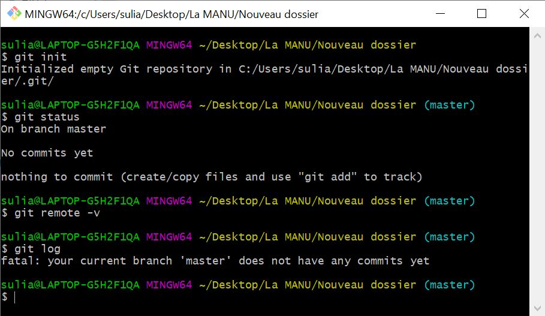

Git est un logiciel de gestions de codes et Github est la plateforme d'hébergement des codes.
Git hub permet de créer des commit, qui jouent le rôle de sauvegarde de chaque étape de la création d'un projet.
Pratique pour collaborer en créant un branche ou un clone permettant de modifier le projet sans intervenir sur le code principal.
Git Bash est la ligne de commande, l'interface permettant de lancer les commandes Git et de push les projet sur Github.
Quelques commandes :
